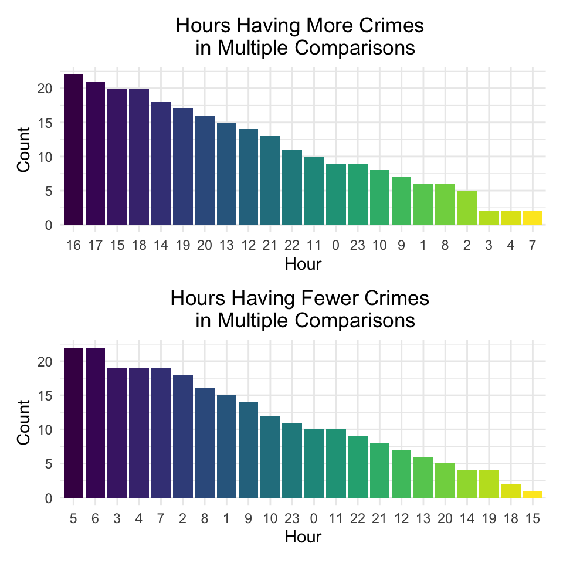
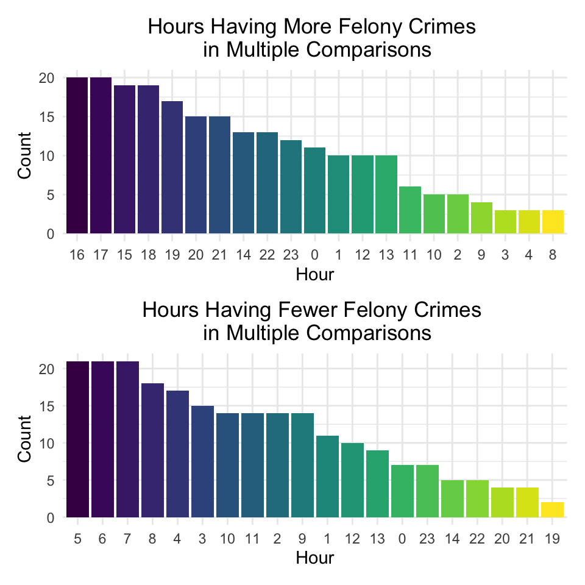
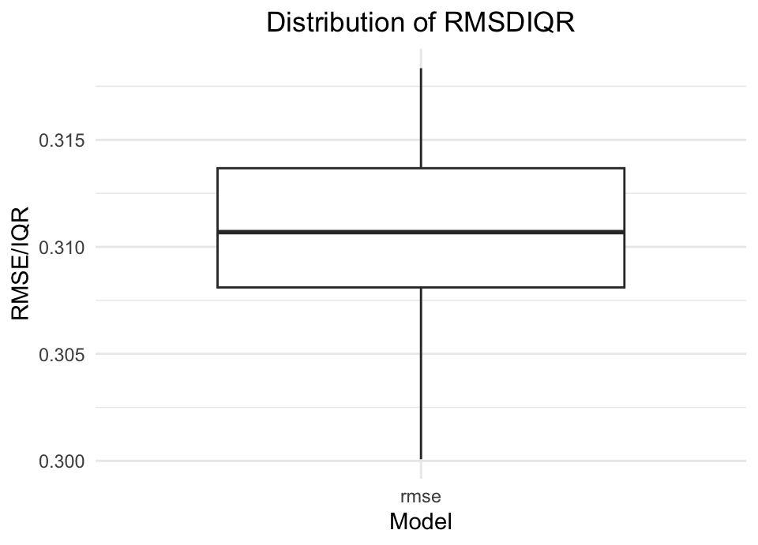

Statistical analysis and linear model building
Statistical analysis
Anova test - suspects’ gender
Whether there is a significant difference in the number of male and female suspects. We calculate how many male and female suspects in month, year, then plot the disturbution of number of male and female suspects.
data <- read_csv("../data/full_filter_data.csv")
gender_data <- data %>%
group_by(year, month, susp_sex) %>%
summarise(number = n()) %>%
mutate(susp_sex = as.factor(susp_sex)) %>%
filter(susp_sex %in% c("F", "M", "U"))
aov_model_1 <- aov(number ~ susp_sex, data = gender_data)
aov_model_1 %>%
broom::tidy() %>%
knitr::kable(digits = 4, align = 'c')| term | df | sumsq | meansq | statistic | p.value |
|---|---|---|---|---|---|
| susp_sex | 2 | 22482073 | 11241036.36 | 397.0255 | 0 |
| Residuals | 456 | 12910789 | 28313.13 | NA | NA |
There is a significant difference in the number of male and female suspects. Through the boxplot in EDA part, we could easily see that male is more likely to be suspects than females if we consider the unknown.
T test - victims’ gender
We wonder whether there is a significant difference in the number of male and female victims. So we calculate how many male and female victims in month, year, then plot the disturbution of number of male and female victims. And I also do the same steps for vic_sex include D=Business/Organization, E=PSNY/People of the State of New York.
data <- read_csv("../data/full_filter_data.csv")
female <- data %>%
group_by(year, month, vic_sex) %>%
summarise(number = n()) %>%
mutate(vic_sex = as.factor(vic_sex)) %>%
filter(vic_sex %in% c("F"))
male <- data %>%
group_by(year, month, vic_sex) %>%
summarise(number = n()) %>%
mutate(vic_sex = as.factor(vic_sex)) %>%
filter(vic_sex %in% c("M"))
t.test(pull(female, number), pull(male, number)) %>% broom::glance() %>%
knitr::kable(digits = 4, align = 'c')| estimate | estimate1 | estimate2 | statistic | p.value | parameter | conf.low | conf.high | method | alternative |
|---|---|---|---|---|---|---|---|---|---|
| -117.817 | 469.2353 | 587.0523 | -11.0482 | 0 | 286.4321 | -138.8066 | -96.8274 | Welch Two Sample t-test | two.sided |
There is a significant difference in the number of male and female suspects. Through the boxplot, though compared to the suspect, the female victim number rises a lot, male is still more likely to be victims than females.
Logistic regression - suspects’ gender and crime successful rate
data <- read_csv("../data/full_filter_data.csv")
gender_data_rate <- data %>%
filter(susp_sex %in% c("F", "M", "U")) %>%
mutate(success_fail = ifelse(success_fail == "COMPLETED", 1, 0))
reg_successrate = glm(success_fail ~ susp_sex, family=binomial(link="logit"), data = gender_data_rate)
reg_successrate %>%
broom::tidy() %>%
knitr::kable(digits = 4, align = 'c')| term | estimate | std.error | statistic | p.value |
|---|---|---|---|---|
| (Intercept) | 4.0271 | 0.0475 | 84.8640 | 0 |
| susp_sexM | -0.4020 | 0.0512 | -7.8548 | 0 |
| susp_sexU | 0.3592 | 0.0613 | 5.8628 | 0 |
gender_data_rate %>%
group_by(year, success_fail, susp_sex) %>%
summarise(number = n()) %>%
mutate(success_fail = ifelse(success_fail == 1, "COMPLETED", "ATTEMPTED")) %>%
pivot_wider(
names_from = "success_fail",
values_from = "number") %>%
mutate(total = ATTEMPTED+COMPLETED,
rate = COMPLETED/total) %>%
plot_ly(x = ~ susp_sex, y = ~ rate, type = "box", color = ~ susp_sex, colors = "viridis") %>%
layout(xaxis = list(title = "Suspects' Gender"), yaxis = list(title = "Rate"))There is a significant relationship between gender of suspects and successful rate. Through the boxplot, we could see that distribution of the successful rate of male suspects is lower than distribution of the successful rate of female suspects.
Logistic regression - victims’ gender and crime successful rate
data <- read_csv("../data/full_filter_data.csv")
gender_data_rate_1 <- data %>%
filter(vic_sex %in% c("F", "M")) %>%
mutate(success_fail = ifelse(success_fail == "COMPLETED", 1, 0))
reg_successrate_1 = glm(success_fail ~ vic_sex, family=binomial(link="logit"), data = gender_data_rate_1)
reg_successrate_1 %>%
broom::tidy() %>%
knitr::kable(digits = 4, align = 'c')| term | estimate | std.error | statistic | p.value |
|---|---|---|---|---|
| (Intercept) | 4.1047 | 0.0295 | 138.9947 | 0 |
| vic_sexM | -0.4281 | 0.0365 | -11.7174 | 0 |
gender_data_rate_1 %>%
group_by(year, success_fail, vic_sex) %>%
summarise(number = n()) %>%
mutate(success_fail = ifelse(success_fail == 1, "COMPLETED", "ATTEMPTED")) %>%
pivot_wider(
names_from = "success_fail",
values_from = "number") %>%
mutate(total = ATTEMPTED+COMPLETED,
rate = COMPLETED/total) %>%
plot_ly(x = ~ vic_sex, y = ~rate, type = "box", color = ~ vic_sex, colors = "viridis") %>%
layout(xaxis = list(title = "Victims' Gender"), yaxis = list(title = "Rate"))Through the summary, we could see that crimes on male is significantly less to success (though still at a high ratio). According to the boxplot, we could see that distribution of the successful rate of male victims is also lower than distribution of the successful rate of male victims.
Correlation between crime number and time
In the EDA part, we see that there exist some pattern in month and time in one day, but is it only random error and fluctuation, or there exist a significant difference?
Anova test - crime number and month
We use group_by and summarize function to get the number of cases in each month and year, and then use the number of cases and month_data to make an ANOVA model to test whether there is a significant difference of number of crime cases among each month.
data <- read_csv("../data/full_filter_data.csv")
month_data <- data %>%
group_by(year, month) %>%
summarise(number = n()) %>%
mutate(month = as.factor(month),
year = as.factor(year))
aov_model <- aov(number ~ month, data = month_data)
aov_model %>%
broom::tidy() %>%
knitr::kable(digits = 4, align = 'c')| term | df | sumsq | meansq | statistic | p.value |
|---|---|---|---|---|---|
| month | 11 | 5347936 | 486176.01 | 14.1524 | 0 |
| Residuals | 141 | 4843764 | 34352.94 | NA | NA |
By the result above, we find that there are very significant difference in the crime numbers between months. Therefore, we utilized Tukey’s method for post hoc tests, to see which months are different.
Firstly, we use Turkey methods to analyze the ANOVA model, select the variables which p-value are smaller than 0.05, and arrange them by adj p_value. Then, we separate the contrast to A and B and add two variables “high” and “low” depending on whether estimate is larger than 0 to decide how A and B to fit high and low. Finally, we make a two panel plot to show the order of the months become “high” and “low” in the process of comparing.
aov_posthoc <- TukeyHSD(aov_model, conf.level = .95) %>%
broom::tidy() %>%
filter(adj.p.value < 0.05) %>%
arrange(adj.p.value)
aov_posthoc %>%
head(5) %>%
knitr::kable(digits = 4 )| term | contrast | null.value | estimate | conf.low | conf.high | adj.p.value |
|---|---|---|---|---|---|---|
| month | 8-2 | 0 | 566.5385 | 324.9066 | 808.1704 | 0 |
| month | 7-2 | 0 | 537.9231 | 296.2912 | 779.5550 | 0 |
| month | 12-8 | 0 | -506.5705 | -753.1850 | -259.9560 | 0 |
| month | 5-2 | 0 | 485.3077 | 243.6758 | 726.9396 | 0 |
| month | 9-2 | 0 | 474.6154 | 232.9835 | 716.2473 | 0 |
aov_group <- aov_posthoc %>%
separate(contrast, sep = "-", into = c("A", "B")) %>%
mutate(high = if_else(estimate > 0, true = A, false = B),
low = if_else(estimate > 0, true = B, false = A)) %>%
mutate(high = fct_infreq(high),
low = fct_infreq(low))
aov_fig1 <- aov_group %>%
ggplot(aes(x = high, fill = high)) +
geom_bar(stat = "count") +
labs(x = "Month", y = "Count", title =
"Months Having More Crimes \n in Multiple Comparisons") + guides(fill = "none")
aov_fig2 <- aov_group %>%
ggplot(aes(x = low, fill = low)) +
geom_bar(stat = "count") +
labs(x = "Month", y = "Count",title =
"Months Having Fewer Crimes \n in Multiple Comparisons") + guides(fill = "none")
aov_fig1 / aov_fig2
After pairwise independent multiple tests, we can draw the conclusion. We can roughly divide the months in one year into 3 groups. July, August, October, May, June, September generally have more crimes. February, January, November, December have fewer crimes. While March and April is at medium level, the crime number in this two months are significantly less than those months with excessive crimes, but also significantly more than months that have fewest crimes.
Anova test - crime number and hour
Next, we repeat the steps, to see whether crime number at different time in a day have significant difference.We use group_by and summarize function to get the number of cases in each hour, arrange hour from 0 to 23, and then use the number of cases and hour_data to make an ANOVA model to test whether there is a significant difference of number of crime cases among each hour.
# Is there differnece between case numbers in every hour?
hour_data = data %>%
group_by(year, month, hour) %>%
summarise(number = n()) %>%
mutate(hour = as.factor(hour),
hour = fct_inseq(hour))
aov_hour <- aov(number ~ hour, data = hour_data)
aov_hour %>%
broom::tidy() %>%
knitr::kable(digits = 4 )| term | df | sumsq | meansq | statistic | p.value |
|---|---|---|---|---|---|
| hour | 23 | 3889921 | 169126.9830 | 594.794 | 0 |
| Residuals | 3648 | 1037292 | 284.3455 | NA | NA |
By the result above, there are also significant difference in the mean number of crimes between different hours in one day.
Afterwards, we use Turkey methods to analyze the ANOVA model, steps is consistent with text above.
hour_posthoc <- TukeyHSD(aov_hour, conf.level = .95) %>%
broom::tidy() %>%
filter(adj.p.value < 0.05) %>%
arrange(adj.p.value)
hour_group <- hour_posthoc %>%
separate(contrast, sep = "-", into = c("A", "B")) %>%
mutate(high = if_else(estimate > 0, true = A, false = B),
low = if_else(estimate > 0, true = B, false = A)) %>%
mutate(high = fct_infreq(high),
low = fct_infreq(low))
aov_fig3 <- hour_group %>%
ggplot(aes(x = high, fill = high)) +
geom_bar(stat = "count") +
labs(x = "Hour", y = "Count", title =
"Hours Having More Crimes \n in Multiple Comparisons") + guides(fill = "none")+
theme(plot.title = element_text(hjust = 0.5))
aov_fig4 <- hour_group %>%
ggplot(aes(x = low, fill = low)) +
geom_bar(stat = "count") +
labs(x = "Hour", y = "Count",title =
"Hours Having Fewer Crimes \n in Multiple Comparisons") + guides(fill = "none")+
theme(plot.title = element_text(hjust = 0.5))
aov_fig3 / aov_fig4
The result corresponded with the findings in EDA part. The most dangerous hour is 12:00 - 21:00, all of them are at high ranks in the left figure. Comparatively, 1:00 - 9:00 is the most peaceful time. But it’s our consensus that midnights are more hazardous. So we questioned on if more severe levels of crimes take place more in the midnights.
Anova test - FELONY crime number and hour
We use group_by and summarize function to get the number of cases in each level, hour, month and year, and select the data which level equals FELONY, then use the number of cases and hour_level to make an ANOVA model to test whether there is a significant difference of level of crime cases among each hour. Then, we use Turkey methods to analyze the ANOVA model. The other steps is consistent with text above.
hour_level = data %>%
group_by(year, month, hour, level) %>%
filter(level == "FELONY") %>%
summarise(number = n()) %>%
mutate(hour = as.factor(hour),
hour = fct_inseq(hour))
aov_level <- aov(number ~ hour, data = hour_level)
aov_level %>%
broom::tidy() %>%
knitr::kable(digits = 4 )| term | df | sumsq | meansq | statistic | p.value |
|---|---|---|---|---|---|
| hour | 23 | 252643.9 | 10984.5174 | 281.7942 | 0 |
| Residuals | 3648 | 142201.4 | 38.9806 | NA | NA |
level_posthoc <- TukeyHSD(aov_level, conf.level = .95) %>%
broom::tidy() %>%
filter(adj.p.value < 0.05) %>%
arrange(adj.p.value)
level_group <- level_posthoc %>%
separate(contrast, sep = "-", into = c("A", "B")) %>%
mutate(high = if_else(estimate > 0, true = A, false = B),
low = if_else(estimate > 0, true = B, false = A)) %>%
mutate(high = fct_infreq(high),
low = fct_infreq(low))
aov_fig5 <- level_group %>%
ggplot(aes(x = high, fill = high)) +
geom_bar(stat = "count") +
labs(x = "Hour", y = "Count", title =
"Hours Having More Felony Crimes \n in Multiple Comparisons") + guides(fill = "none")+
theme(plot.title = element_text(hjust = 0.5))
aov_fig6 <- level_group %>%
ggplot(aes(x = low, fill = low)) +
geom_bar(stat = "count") +
labs(x = "Hour", y = "Count",title =
"Hours Having Fewer Felony Crimes \n in Multiple Comparisons") + guides(fill = "none")+
theme(plot.title = element_text(hjust = 0.5))
aov_fig5 / aov_fig6
The conclusion still holds true: afternoon is more dangerous. Be cautious! What time you think is safe may be dangerous than your thought.
Build linear model for prediction
All variables are categorical, except the response variable crime number. After plotting the histogram, we find the crime number is strongly right-skewed. Using boxcox transformation, we take logarithm of number and the data looks much more normally distributed. We decide to select meaningful age and male and female of gender to do the following prediction. Then we make a lm model to use month, hour, vic_age, vic_race, and vic_sex as predictors. Then we summary the model to get results to test significance of each predictor. Finally, we make a boxplot of the distribution of RMSE/IQR (normalized RMSE).
# find that group by day, every day there are too few cases, not appropriate for prediction, so we choose to ignore the day variable
set.seed(1244)
lm_data <- data %>%
filter(vic_age %in% c("<18", "18-24", "25-44", "45-64", "65+")) %>%
filter(vic_sex %in% c("M", "F")) %>%
filter(vic_race != "(null)") %>%
mutate_at(c("month", "hour", "vic_age", "vic_race", "vic_sex"), as.factor) %>%
group_by(month, hour, vic_age, vic_race, vic_sex) %>%
summarise(log_number = log(n()))
lm_model <- lm(log_number ~ . , data = lm_data)
options(digits = 4)
summary(lm_model, correlation = FALSE) %>%
broom::tidy() %>%
knitr::kable(align = 'c', caption = "Linear model parameters")| term | estimate | std.error | statistic | p.value |
|---|---|---|---|---|
| (Intercept) | -1.5058 | 0.0393 | -38.3320 | 0.0000 |
| month2 | -0.0464 | 0.0238 | -1.9533 | 0.0508 |
| month3 | 0.0774 | 0.0236 | 3.2781 | 0.0010 |
| month4 | 0.0735 | 0.0236 | 3.1104 | 0.0019 |
| month5 | 0.2214 | 0.0235 | 9.4388 | 0.0000 |
| month6 | 0.2671 | 0.0234 | 11.3998 | 0.0000 |
| month7 | 0.2909 | 0.0233 | 12.4718 | 0.0000 |
| month8 | 0.2773 | 0.0234 | 11.8505 | 0.0000 |
| month9 | 0.2856 | 0.0235 | 12.1713 | 0.0000 |
| month10 | 0.1403 | 0.0235 | 5.9638 | 0.0000 |
| month11 | 0.0413 | 0.0235 | 1.7554 | 0.0792 |
| month12 | -0.0171 | 0.0236 | -0.7247 | 0.4686 |
| hour1 | -0.1825 | 0.0344 | -5.3102 | 0.0000 |
| hour2 | -0.3163 | 0.0349 | -9.0652 | 0.0000 |
| hour3 | -0.3901 | 0.0352 | -11.0760 | 0.0000 |
| hour4 | -0.4544 | 0.0360 | -12.6362 | 0.0000 |
| hour5 | -0.6499 | 0.0363 | -17.8809 | 0.0000 |
| hour6 | -0.7334 | 0.0358 | -20.4907 | 0.0000 |
| hour7 | -0.3137 | 0.0341 | -9.2079 | 0.0000 |
| hour8 | -0.0269 | 0.0332 | -0.8111 | 0.4173 |
| hour9 | 0.0293 | 0.0330 | 0.8868 | 0.3752 |
| hour10 | 0.1247 | 0.0330 | 3.7783 | 0.0002 |
| hour11 | 0.1929 | 0.0327 | 5.8923 | 0.0000 |
| hour12 | 0.3899 | 0.0324 | 12.0161 | 0.0000 |
| hour13 | 0.3674 | 0.0326 | 11.2777 | 0.0000 |
| hour14 | 0.4884 | 0.0322 | 15.1804 | 0.0000 |
| hour15 | 0.6093 | 0.0323 | 18.8838 | 0.0000 |
| hour16 | 0.6033 | 0.0322 | 18.7278 | 0.0000 |
| hour17 | 0.5842 | 0.0323 | 18.0674 | 0.0000 |
| hour18 | 0.5743 | 0.0323 | 17.7643 | 0.0000 |
| hour19 | 0.4524 | 0.0325 | 13.9123 | 0.0000 |
| hour20 | 0.4142 | 0.0326 | 12.6987 | 0.0000 |
| hour21 | 0.2844 | 0.0331 | 8.6005 | 0.0000 |
| hour22 | 0.1839 | 0.0335 | 5.4892 | 0.0000 |
| hour23 | 0.0922 | 0.0337 | 2.7384 | 0.0062 |
| vic_age18-24 | 0.6691 | 0.0165 | 40.4323 | 0.0000 |
| vic_age25-44 | 1.7845 | 0.0163 | 109.7964 | 0.0000 |
| vic_age45-64 | 1.1759 | 0.0164 | 71.8018 | 0.0000 |
| vic_age65+ | -0.2352 | 0.0178 | -13.1836 | 0.0000 |
| vic_raceASIAN/PACIFIC | 1.2560 | 0.0263 | 47.8290 | 0.0000 |
| vic_raceBLACK | 2.9660 | 0.0255 | 116.4605 | 0.0000 |
| vic_raceBLACK HISPANIC | 1.5530 | 0.0258 | 60.2901 | 0.0000 |
| vic_raceUNKNOWN | 0.9728 | 0.0263 | 36.9415 | 0.0000 |
| vic_raceWHITE | 2.1920 | 0.0256 | 85.4883 | 0.0000 |
| vic_raceWHITE HISPANIC | 2.5362 | 0.0255 | 99.4092 | 0.0000 |
| vic_sexM | 0.2796 | 0.0097 | 28.9211 | 0.0000 |
summary(lm_model) %>%
broom::glance() %>%
knitr::kable(align = 'c', caption = "Linear model statistics")| r.squared | adj.r.squared | sigma | statistic | p.value | df | df.residual | nobs |
|---|---|---|---|---|---|---|---|
| 0.7564 | 0.7556 | 0.5803 | 1009 | 0 | 45 | 14622 | 14668 |
cv_result =
crossv_mc(lm_data, 100) %>%
mutate(model = map(train, ~lm(log_number ~ ., data =.x))) %>%
mutate(rmse = map2_dbl(model, test,
~rmse(model = .x, data = .y)))
sum_number <- summary(lm_data$log_number) %>%
broom::tidy()
IQR <- sum_number$q3 - sum_number$q1
cv_result %>%
select(starts_with("rmse")) %>%
pivot_longer(
everything(),
names_to = "model",
values_to = "rmse",
names_prefix = "rmse_") %>%
mutate(model = fct_inorder(model)) %>%
ggplot(aes(x = model, y = rmse/IQR)) + geom_boxplot() +
labs(x = "Model", y = "RMSE/IQR", title = "Distribution of RMSDIQR") +
theme(plot.title = element_text(hjust = 0.5))
The model fits so well as the adjusted R squared is 0.756 with a extreme small p value. Moreover, we use normalized RMSE as the reference to evaluate the prediction ability of this model. It turns out to be good compared to the IQR, which means it’s prediction error is less than \(\frac{1}{3}\) IQR.